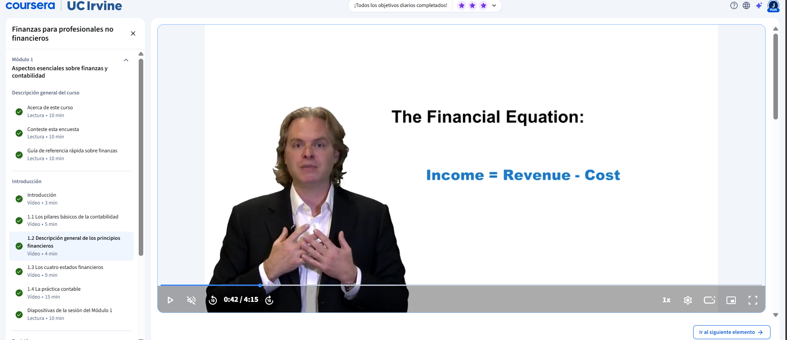
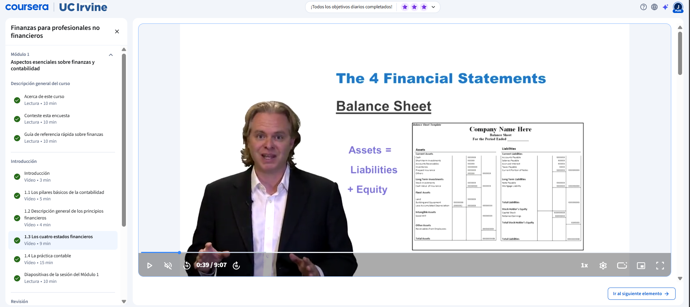

Conoce la diferencia entre contabilidad y finanzas, la ecuación contable, los cuatro estados financieros y los principios que rigen la práctica contable.
Presentación general del curso dirigido a profesionales de negocios no especializados en finanzas. Se establece el mapa del módulo: contabilidad, estados financieros, costos, ratios financieras y valoración de negocios, explicando cómo cada tema se conecta con el siguiente para construir una comprensión integral del mundo financiero empresarial.
Se explica la diferencia fundamental entre contabilidad y finanzas usando la ecuación contable: Activo = Pasivo + Patrimonio Neto. La contabilidad sigue la pista al dinero registrando lo que tiene, lo que debe y lo que posee una empresa, mientras que las finanzas se enfocan en el uso real del dinero para generar resultados. Se ilustra con el ejemplo de un auto de $50 000 del que se han pagado $30 000, mostrando cómo los tres componentes de la ecuación siempre están en equilibrio.

Se presenta la ecuación financiera: Resultado = Ingreso − Costo. El ingreso se descompone en precio por cantidad, y los costos en fijos más variables. Se aclara la diferencia entre contabilidad y finanzas: mientras la contabilidad registra imparcialmente lo que ocurre, las finanzas usan esa información para tomar decisiones que reduzcan costos, aumenten ingresos y maximicen el resultado final del negocio.

Se describen los cuatro pilares de la información financiera. El balance de situación es una fotografía de la empresa en un momento dado. La cuenta de resultados muestra todos los ingresos y costos durante un período para determinar si el negocio ganó o perdió dinero. El estado de flujos de efectivo rastrea el dinero real que entra y sale. El estado del patrimonio neto muestra la composición y los cambios en la propiedad de la empresa a lo largo del tiempo.
Se repasan los principios GAAP que guían cómo se registra la información financiera. El principio de coste histórico establece que los bienes se registran por su precio de adquisición original. El principio de imputación de ingresos y la contabilidad por devengo determinan que los ingresos se registran cuando se producen. Los principios de correlación, revelación completa, importancia relativa, coherencia y prudencia valorativa aseguran que los estados financieros sean precisos, consistentes y conservadores.